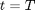

Zero Coupon Bond to Swap Rate
The class takes an input data series object containing a set of zero coupon bonds and outputs a two dimesional data series object of equilibrium swap (par) rates with axes corresponding to maturity and tenor of swap contract.
Contents
%MATLAB CODE %%%%%%%%%%%%%%%%%%%%%%%%%%%%%%%%%%%%%%%%%%%%%%%%%%%%%%%%%%%%%%%%%%%%%%%%%%% classdef bootstrap_ZCBtoSwapRate < prursg.Bootstrap.BaseBootstrapAlgorithm
%%%%%%%%%%%%%%%%%%%%%%%%%%%%%%%%%%%%%%%%%%%%%%%%%%%%%%%%%%%%%%%%%%%%%%%%%%%
How to use the class
There are two ways to use this class:
- To calculate a two dimensional data series object of equilibrium forward swap (par) rates with axes corresponding to maturity and tenor using [[bootstrap_ZCBtoSwapRate()].
- To calculate a forward starting swap rate and/or a forward starting annuity.
Properties
[outputfreq] : A string that lists the number of monthly, quarterly, semi-annual and annual intervals.
Data type : string
[compoundingfrequency] : The annual frequency, , at which the output yield curve is compounded e.g. "2" for semi-annually.
Data type : double
[swaptenors] : The length of the swap contracts, .
Data type : string
[ZCBPRICES] : The price of a zero coupon bond, , at present time, , which pays 1 at maturity, .
Data type : data series, doubles
[ZCBMaturities] : Times, , when the zero coupon bonds mature.
Data type : data series, doubles
[SwaptionMaturities] : Times when the swaptions expire. These are also the times when the swap contracts begin, .
Data type : data series, doubles
[newDataSeriesObject] : New data series object, setup to store results
Data Type: data series
[TimeTolerance] : Tolerance value used to help identify the time indices of a swap contract.
Data Type: double
%MATLAB CODE %%%%%%%%%%%%%%%%%%%%%%%%%%%%%%%%%%%%%%%%%%%%%%%%%%%%%%%%%%%%%%%%%%%%%%%%%%% properties outputfreq ; compoundingfrequency; swaptenors ; ZCBPRICES ; ZCBMaturities ; SwaptionMaturities % Set-Up data series object to store results newDataSeriesObject % TimeTolerance within one business day TimeTolerance = 1/250; end %%%%%%%%%%%%%%%%%%%%%%%%%%%%%%%%%%%%%%%%%%%%%%%%%%%%%%%%%%%%%%%%%%%%%%%%%%%
List of Methods
1) |[bootstrap_ZCBtoSwapRate()] : Function returns a two dimensional data series object of equilibrium swap (par) rates with axes corresponding to maturity and tenor of swap contract.
2) |[createArrayfromCSVstring()] : Function returns an array containing doubles from an input string.
3) |[EQFORWARDSWAPRATE()] : Function returns a forward starting annuity factor and the corresponding equilibrium forward swap rate calculated from zero coupon bond (ZCB) inputs.
%MATLAB CODE %%%%%%%%%%%%%%%%%%%%%%%%%%%%%%%%%%%%%%%%%%%%%%%%%%%%%%%%%%%%%%%%%%%%%%%%%%% methods
% Constructor function obj = bootstrap_ZCBtoSwapRate() obj = obj@prursg.Bootstrap.BaseBootstrapAlgorithm(); end function results = Bootstrap(obj,DataSeriesIn)
%%%%%%%%%%%%%%%%%%%%%%%%%%%%%%%%%%%%%%%%%%%%%%%%%%%%%%%%%%%%%%%%%%%%%%%%%%%
Details of Methods
1) [bootstrap_ZCBtoSwapRate()]
"""""""""""""""""""""""""""""""""""""""""""""""""""""""""""""""""""""""""
Description
Function uses [EQFORWARDSWAPRATE()] to return a two dimensional data series object of forward starting equilibrium swap (par) rates with axes corresponding to maturity and tenor of the swap contracts.
Inputs
[outputfreq] - A string that lists the number of monthly, quarterly, semi-annual and annual intervals.
Data type : string
[compoundingfrequency] : - The annual frequency, , at which the output yield curve is compounded e.g. "2" for semi-annually.
Data type : double
[swaptenors] : The length of the swap contracts, .
Data type : string
[ZCBPRICES] : The price of a zero coupon bond, , at present time, , which pays 1 at maturity, .
Data type : data series, doubles
[ZCBMaturities] : Times, , when the zero coupon bonds mature.
Data type : data series, doubles
[SwaptionMaturities] : Times when swaptions expire. This are also the times when the swap contracts begin.
Data type : data series, doubles
[newDataSeriesObject] : New data series object, setup to store results.
Data Type: data series
Outputs
Two dimensional data series object of equilibrium forward starting swap (par) rates with axes corresponding to maturity and tenor or swap contract.
Calculations
Initially the ZCB data is sorted and cloned. Then the output frequency profile is identified and set up, this specifies the frequency of outputs e.g. monthly, quarterly or annually etc.
Using [EQFORWARDSWAPRATE()], looped over by swap start dates and swap tenors, the two dimensional swap rate data series objects are created for each date that is required.
The output data series properties are then updated.
%MATLAB Code %%%%%%%%%%%%%%%%%%%%%%%%%%%%%%%%%%%%%%%%%%%%%%%%%%%%%%%%%%%%%%%%%%%%%%%%%%% % Step 1. Sort and clone ZCB data newSortDataSeries=Bootstrap.BsSort(); obj.newDataSeriesObject =newSortDataSeries.SortDataSeries... (DataSeriesIn(1).Clone); inumberOfDates = size(DataSeriesIn(1).dates,1); obj.ZCBPRICES = obj.newDataSeriesObject.values; obj.ZCBMaturities =... cell2mat(obj.newDataSeriesObject.axes(1).values); swaptenors = obj.createArrayfromCSVstring(obj.swaptenors); % obj.SwaptionMaturities = obj.createArrayfromCSVstring... %(obj.SwaptionMaturities); % Step 2. Get OutPutFreqProfile maxTerm = obj.newDataSeriesObject.axes(1).values{1, end}; BsfrequencyprofileObject =... Bootstrap.Bsfrequencyprofile(obj.outputfreq,maxTerm); outputfreqProfile = ... BsfrequencyprofileObject.AdjustedIntervalArray; outputfreqProfile = [ 0 ; outputfreqProfile] ; % The Inclusion of zero gives us the initial par rates % Step 3 :: Set-Up data series object to store % results :: use existing raw data series object to achieve this obj.newDataSeriesObject.axes(1).values= ... num2cell(outputfreqProfile'); obj.newDataSeriesObject.axes(2).values = num2cell(swaptenors); SWAPRATETENOR = 1/ obj.compoundingfrequency; NumOFSwapTenors =size(obj.newDataSeriesObject.axes(2).values,2); NumOFSwaptionMaturity =... size(obj.newDataSeriesObject.axes(1).values,2); Results = zeros(NumOFSwapTenors,NumOFSwaptionMaturity ); % allocate storage space for i= 1 : inumberOfDates for j = 1 : NumOFSwapTenors SwapTenor = obj.newDataSeriesObject.axes(2).values{j}; for k = 1 : NumOFSwaptionMaturity SwaptionMaturity = ... obj.newDataSeriesObject.axes(1).values{k}; [SwapRate AnnuityFactor] = ... obj.EQFORWARDSWAPRATE(obj.ZCBPRICES{i},... obj.ZCBMaturities, SwaptionMaturity, ... SwapTenor, SWAPRATETENOR); Results(j,k) = SwapRate; end end obj.newDataSeriesObject.values{i} =Results'; end % Step4. Return data series object results = obj.newDataSeriesObject; % Step 5. Update Data-Series Properties obj.newDataSeriesObject.axes(1).title = 'Swaption Maturity'; obj.newDataSeriesObject.axes(2).title = 'Swap Tenor'; obj.newDataSeriesObject.description = ... 'derived (equilibrium) swap rates using bootstrap_ZCBtoSwapRate'; obj.newDataSeriesObject.source = 'iMDP'; obj.newDataSeriesObject.ratetype = 'swap'; obj.newDataSeriesObject.compounding ='ann'; obj.newDataSeriesObject.compoundingfrequency = ... num2str(obj.compoundingfrequency); obj.newDataSeriesObject.daycount ='na'; obj.newDataSeriesObject.units ='absolute';
end %%%%%%%%%%%%%%%%%%%%%%%%%%%%%%%%%%%%%%%%%%%%%%%%%%%%%%%%%%%%%%%%%%%%%%%%%%%
ans =
Bootstrap.bootstrap_ZCBtoSwapRate handle
Package: Bootstrap
Properties:
outputfreq: []
compoundingfrequency: []
swaptenors: []
ZCBPRICES: []
ZCBMaturities: []
SwaptionMaturities: []
newDataSeriesObject: []
TimeTolerance: 0.0040
3) [EQFORWARDSWAPRATE()]
"""""""""""""""""""""""""""""""""""""""""""""""""""""""""""""""""""""""""
Description
The function returns equilibrium foward swap rates and an annuity factor based on a set of ZCB Prices, . It assumes that the ZCB maturity values are evenly spaced and that swap payments coincide with a ZCB maturity.
Inputs
[ZCBPRICES] : The price of a zero coupon bond, , at present time, , which pays 1 at maturity, .
Data Type : data series, doubles
[ZCBMaturities] : Times, , when the zero coupon bonds mature.
Data Type : data series, doubles
[SWAPSTART] : Time at which the swap contract begins, .
Data Type : double
[SWAPTENOR] : Duration of the swap contract, in years.
Data Type : double
[SWAPRATETENOR] : Time period between swap payments, in years.
Data Type : double
Outputs
[SwapRate] : Equilibrium forward swap rate, , at present time .
Data Type : double
[AnnuityFactor] : Annuity factor.
Data Type : double
Calculations
Calculation of Annuity Factor
To calculate the annuity factor the following formula is used:

where,
 : The value of an annuity factor at time, , for an annuity starting at and finishing at .
: The value of an annuity factor at time, , for an annuity starting at and finishing at .
: Compounding frequency; the reciprocal of the time between swap payments.
: Start time of the swap
: Swap tenor
Calculation of Swap Rate
To calculate the swap rate we use:
a) If ,
b) Otherwise,
where,
: Present value, at , of -year swap starting at time, .
: Price of zero coupon bond with maturity, .
%MATLAB Code %%%%%%%%%%%%%%%%%%%%%%%%%%%%%%%%%%%%%%%%%%%%%%%%%%%%%%%%%%%%%%%%%%%%%%%%%%% function [SwapRate AnnuityFactor]=... EQFORWARDSWAPRATE(obj,ZCBPRICES,ZCBMaturities, SWAPSTART, ... SWAPTENOR, SWAPRATETENOR) NumberOfBonds=size(ZCBPRICES,2); TenorMaturityRatio = floor(SWAPRATETENOR/ZCBMaturities(1,1)); % assert ( ZCBMaturities( 1, end) > (SWAPSTART + SWAPTENOR), ... %'Swaption terms are greator than the length of the yield curve') if ZCBMaturities( 1, end) < (SWAPSTART + SWAPTENOR) SwapRate =0; AnnuityFactor=0; return end % Find Position of the first Bond required to Calculate the Forward % Starting annuity factor for i = 1:1:NumberOfBonds if (abs(SWAPSTART) < obj.TimeTolerance) SWAPSTARTINDEX = 0; elseif (abs(ZCBMaturities(1,i) - SWAPSTART)<... obj.TimeTolerance) SWAPSTARTINDEX = i; end if abs(ZCBMaturities(1,i) -( SWAPSTART +SWAPTENOR)) < ... obj.TimeTolerance SWAPSENDINDEX = i; break % Exit the For Loop end end % Calculate Annuity Factor AnnuityFactor = 0; for i = (SWAPSTARTINDEX +... TenorMaturityRatio):TenorMaturityRatio:SWAPSENDINDEX AnnuityFactor =AnnuityFactor +SWAPRATETENOR*ZCBPRICES(1,i); end %Calculate the equilibrium spot rate if SWAPSTART == 0 SwapRate = (1 - ZCBPRICES(SWAPSENDINDEX))/AnnuityFactor; else SwapRate = (ZCBPRICES(SWAPSTARTINDEX) - ... ZCBPRICES(SWAPSENDINDEX))/AnnuityFactor; end %y = [SwapRate AnnuityFactor]; return end %%%%%%%%%%%%%%%%%%%%%%%%%%%%%%%%%%%%%%%%%%%%%%%%%%%%%%%%%%%%%%%%%%%%%%%%%%%
4) [createArrayfromCSVstring()]
"""""""""""""""""""""""""""""""""""""""""""""""""""""""""""""""""""""""""
Description
Function returns an array of doubles from an input csv string.
Inputs
[stringParameter] : A series of numbers separated by commas, expressed as a csv string.
Data type : String
Outputs
An array whose elements are the numbers previously recorded in the input csv string.
Data type : Data series
Calculations
Function identifies the position of commas within the input string. Using these positions the numbers between the commas are allocated to elements of an array.
%MATLAB Code %%%%%%%%%%%%%%%%%%%%%%%%%%%%%%%%%%%%%%%%%%%%%%%%%%%%%%%%%%%%%%%%%%%%%%%%%%% function y = createArrayfromCSVstring(obj, stringParameter) pos = findstr( stringParameter, ','); if length(pos) == 0 y = str2num(stringParameter); else y = zeros ( 1, length(pos)+1); % Allocate storage space y(1, 1) = str2num(stringParameter(1 :pos(1) -1)); for i = 2 : length( pos) y(1, i) = str2num(stringParameter(pos(i-1)+1 :pos(i) -1)); end y(1, length(pos)+1) = ... str2num(stringParameter(pos(length(pos))+1 :end)); end end %%%%%%%%%%%%%%%%%%%%%%%%%%%%%%%%%%%%%%%%%%%%%%%%%%%%%%%%%%%%%%%%%%%%%%%%%%% % Function is not called anywhere in the class % function [axis1values, axis2values] = ... % createaxisdata (obj, array1, array2) % % len1 = size(array1, 2); % len2 = size(array2, 2); % % axis1values = repmat(array1, 1, len2); % axis2values = zeros(size(axis1values)); % % for i= 1 : len2 % axis2values((i-1)*len1 +1 : i*len1) = ... % repmat( array2(1,i) ,1, len1); % % end % % end
end
end